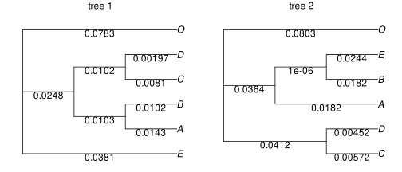
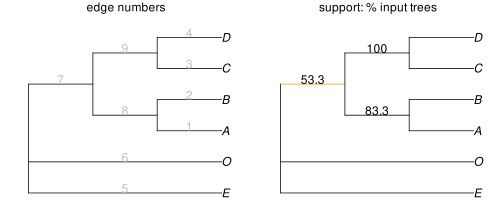
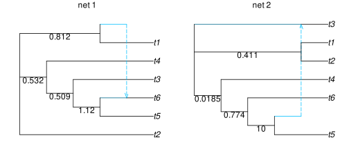
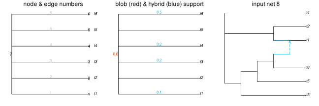
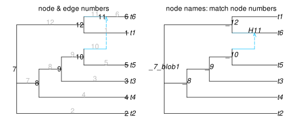
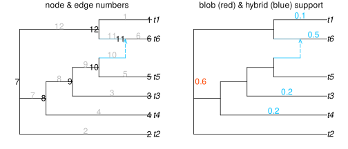
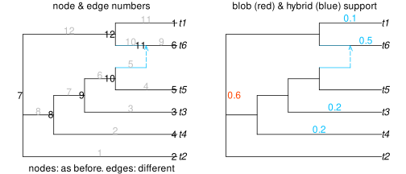
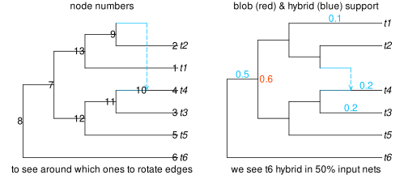
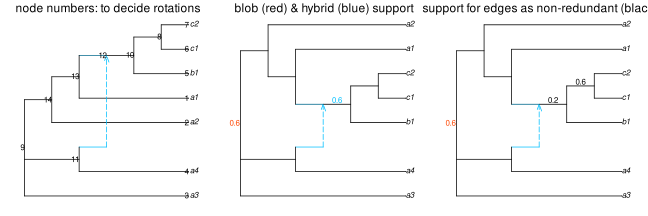
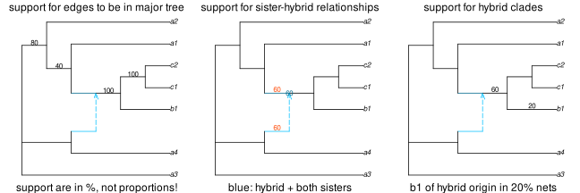

consensus phylogenies
consensus of phylogenetic trees
Given a set of input phylogenies that are all trees, we can get their greedy consensus or their majority-rule consensus with consensustree.
To give an example, we will use a set of trees from an example file that comes with the package:
julia> using PhyloNetworksjulia> inputfile = joinpath(dirname(pathof(PhyloSummaries)), "..","test","raxmltrees.tre");julia> treesample = readmultinewick(inputfile);julia> length(treesample) # 30 trees30julia> treesample[1] # first tree in the listPhyloNetworks.HybridNetwork, Rooted Network 9 edges 10 nodes: 6 tips, 0 hybrid nodes, 4 internal tree nodes. tip labels: E, A, B, C, ... (E:0.038,((A:0.014,B:0.01):0.01,(C:0.008,D:0.002):0.01):0.025,O:0.078);
To visualize trees and network, we use package PhyloPlots.
using PhyloPlots
using RCall # to tweak our plot within RR"layout"([1 2]) # figure of 2 panels
R"par"(mar=[0,0,1,0]) # for smaller margins
plot(treesample[1], showedgelength=true);
R"mtext"("tree 1") # add text annotation: title here
plot(treesample[2], showedgelength=true);
R"mtext"("tree 2")
By default, we get the greedy consensus tree of our input trees, considered as unrooted trees.
julia> con = consensustree(treesample)PhyloNetworks.HybridNetwork, Semidirected Network 9 edges 10 nodes: 6 tips, 0 hybrid nodes, 4 internal tree nodes. tip labels: A, B, C, D, ... (E,O,((A,B),(C,D)));julia> writenewick(con, support=true)"(E,O,((A,B)::0.8333333333333334,(C,D)::1.0)::0.5333333333333333);"
To plot the consensus tree showing support values, we can first extract the support values into a data frame, then use it to label edges. Below, we multiple support values by 100 to get percentages.
julia> using DataFramesjulia> esup = DataFrame( number = [e.number for e in con.edge if !isexternal(e)], support = [round(100 * e.y, digits=1) for e in con.edge if !isexternal(e)] )3×2 DataFrame Row │ number support │ Int64 Float64 ─────┼───────────────── 1 │ 7 53.3 2 │ 8 83.3 3 │ 9 100.0julia> ecol = Dict(r[:number] => (r[:support] < 70 ? "orange2" : "black") for r in eachrow(esup))Dict{Int64, String} with 3 entries: 7 => "orange2" 9 => "black" 8 => "black"
plot(con, showedgenumber=true);
R"mtext"("edge numbers", line=0)
plot(con, edgelabel=esup, edgecolor=ecol);
R"mtext"("support: % input trees", line=0)
consensus tree of blob
Given a set of input phylogenetic networks (which may be trees or not), we can obtain a consensus of their "tree of blobs".
For a given network, the tree of blob is obtained by contracting each blob (2-edge connected component) in the network into a single node. We get a tree, whose edges are exactly the "cut edges" of the network: the edges that, when removed from the network, cut it into disconnected components.
The example below uses a set of 10 networks from a file that comes with the package, all of which have a single reticulation:
julia> netfile = joinpath(dirname(pathof(PhyloSummaries)), "..", "test","bootstrapnets_h1.nwk");julia> netsample = readmultinewick(netfile);julia> length(netsample) # 10 networks10julia> netsample[1] # first network. taxa: t1 through t6PhyloNetworks.HybridNetwork, Rooted Network 12 edges 12 nodes: 6 tips, 1 hybrid nodes, 5 internal tree nodes. tip labels: t2, t5, t6, t3, ... (t2,(((t5,(t6)#H7:::0.665):1.116,t3):0.509,t4):0.532,(t1,#H7:::0.335):0.812);
Let's look at the first and second, say:
plot(netsample[1], showedgelength=true);
plot(netsample[2], showedgelength=true);
R"mtext"("net 2");
The function consensus_treeofblobs returns a NamedTuple with the following keys:
tob: the consensus tree of blobstaxa: list of taxon names, alphabetically, to connect with taxon numbers in some columns of the tables belowblob_table: support for each blob partition in the consensus.circorder_table: support for circular orderings of the taxon blocks within each blobhybrid_table: support for hybrid clades within blobsbipartition_table: support for cut-edge bipartitions not adjacent to an interesting blob (i.e. non-redundant bipartitions).
The tables are row-oriented (NamedTuples of vectors) and can be converted to data frames.
julia> res = consensus_treeofblobs(netsample);┌ Info: Node & edge numbers in tables correspond to current numbers in net. │ If the network is modified or re-read from file, restore matching └ numbers with `resetnodenumbers_fromnames!` and `edgenumber`.julia> keys(res)(:tob, :blob_table, :circorder_table, :hybrid_table, :bipartition_table, :taxa)julia> tree = res[:tob]PhyloNetworks.HybridNetwork, Semidirected Network 6 edges 7 nodes: 6 tips, 0 hybrid nodes, 1 internal tree nodes. tip labels: t1, t2, t3, t4, ... (t1,t2,t3,t4,t5,t6)_7_blob1;julia> writenewick(tree, internallabel=false) # star tree! 1 big blob"(t1,t2,t3,t4,t5,t6);"julia> writenewick(tree) # internal node names: indicate their numbers used later"(t1,t2,t3,t4,t5,t6)_7_blob1;"
Here our consensus tree of blob is a star! The root is a polytomy with 6 edges: one to each taxon. This root node represents a blob that is present in many input networks. It was assigned the name _7_blob1, so later this node will be referred as "node 7" and stands for "blob 1".
The other parts of the results are tables that let us inspect the support for the blob(s) and other features. Here, we use the DataFrames package to display the tables.
julia> using DataFramesjulia> res[:taxa]6-element Vector{String}: "t1" "t2" "t3" "t4" "t5" "t6"julia> blb_df = DataFrame(res[:blob_table], copycols=false); # re-use in memoryjulia> show(blb_df, allcols=true)1×6 DataFrame Row │ blob degree node support_partition partition_num partition │ Int64 Int64 Int64 Float64 String String ─────┼─────────────────────────────────────────────────────────────────────────── 1 │ 1 6 7 0.6 2|4|3|5|6|1 t2|t4|t3|t5|t6|t1
This blb_df table describes each blob partition, and shows its support. Here our consensus tree of blobs has a single blob, so this table has a single row.
- When the edges and nodes of this blob are removed, the full taxon set is disconnected into multiple taxon blocks: a partition of the taxa. This partition is described by a list of taxa in each block, with blocks separated by
|. So here we see that our partition has 6 parts, or taxon blocks, and each taxon is alone in its own block. - The number of taxon blocks is the degree of the blob, given in the "degree" column.
- The "node" column given the number of the node that represents the blob, in the tree of blobs. It's a node with ≥ 4 edges (a polytomy), "degree" edges actually: here 6 edges. Here, it's the root. This node number is indicated in the name assigned to internal node (here 7: in
_7_blob1, see above). - The
support_partitioncolumn gives the proportion of input networks that have a blob with this particular partition: when the blob is removed from the input network, the taxa are divided into these same blocks. Here, 60% of our networks have this partition –and 40% don't. Scrolling back up, we see that "net 1" does have a blob with this partition, and "net 2" does not. This second network "net 2" hast1,t2together in the same block, when we delete its blob. - The partition is given twice: with taxon numbers in column "partition_num", and with taxon names in column "partition". With longer taxon names than in this simple example, the full partition is often long and not shown in full. To see more with all taxon names, we can increase the
truncatenumber. For example:
julia> show(select(blb_df, [:support_partition,:partition]), truncate=64)1×2 DataFrame Row │ support_partition partition │ Float64 String ─────┼────────────────────────────────────── 1 │ 0.6 t2|t4|t3|t5|t6|t1
Next we can look the table describing bipartitions: edges in the consensus tree of blobs that, when deleted, separate the taxon into two parts. Since many edges are already in the tree because they are connected to a blob, we only look at the support of edges as being non-redundant with any blob, that is, additional support: the proportion of input networks that have this edge not connected to any blob.
Here we don't have any such edges because our consensus is a star tree (a single blob, no cut edges). So the corresponding table bip_df is empty:
julia> bip_df = DataFrame(res[:bipartition_table], copycols=false)0×6 DataFrame Row │ node1 node2 edge support_nonredundant cluster_num cluster │ Int64 Int64 Int64 Float64 String String ─────┴─────────────────────────────────────────────────────────────────
More interestingly then, we can look at which taxon blocks are coming off of a (any) blob from a hybrid node:
julia> hyb_df = DataFrame(res[:hybrid_table], copycols=false)4×7 DataFrame Row │ blob node_from node_to edge support_hybrid cluster_num cluster │ Int64 Int64 Int64 Int64 Float64 String String ─────┼──────────────────────────────────────────────────────────────────────── 1 │ 1 7 6 6 0.5 6 t6 2 │ 1 7 1 1 0.1 1 t1 3 │ 1 7 4 4 0.2 4 t4 4 │ 1 7 3 3 0.2 3 t3
This hyb_df table shows which taxon blocks are of hybrid origin in the input networks, and in which proportion of networks. A taxon block is of "hybrid origin" if it is below a hybrid node that "exits" a blob: a hybrid with a child edge outside the blob that the hybrid is in, and whose descendant clade is exactly this taxon block.
In our example:
- The most frequent hybrid is t6: in 50% of input networks. For example, t6 is of hybrid origin in "net 1" above. Note that it may be of hybrid origin in networks that do not have the blob in our consensus tree of blobs.
- The other rows list the other taxon blocks of hybrid origin in some input networks: t3, t4 (each in 20% of networks) and t1 (10%). For example, t3 is of hybrid origin in "net 2", although below a blob that partitions the taxa differently than the blob retained in the consensus.
The table about circular orders is about blobs of level 1 in input networks, for which the taxon blocks are arranged around the blob like around a circle. This "circular order" can be read clock-wise or counter-clockwise, and starting from any taxon block. The table below lists all the circular orders found in the input network, for the blob partitions retained in the consensus.
julia> cir_df = DataFrame(res[:circorder_table], copycols=false);julia> show(cir_df, allcols=true)1×5 DataFrame Row │ blob order support_circorder partition_num partition │ Int64 Tuple… Float64 String String ─────┼──────────────────────────────────────────────────────────────────────────────── 1 │ 1 (1, 2, 3, 4, 5, 6) 0.6 2|4|3|5|6|1 t2|t4|t3|t5|t6|t1
Here, this table has a single row: the same circular order was found in all input networks that have the blob in our consensus (60% of input networks from the blob information in blb_df above). This circular order is indicated in the columns partition_num (taxon numbers) and partition (taxon names). Turning around the cycle, and starting arbitrarily at t2, our networks have this order: t2 → t4 → t3 → t5 → t6 → t1 (then back to t2).
Below, we visualize some of these support values on the consensus tree of blobs. We show:
- in blue, at nodes: the support for the blob partition at each blob node
- in black, along edges adjacent to a blob: the support for each taxon block to be of hybrid origin (in input networks that have this blob or not).
To annotate the appropriate nodes and edges of the consensus, we use the node and edge numbers in the table. To clarify, we first plot the consensus with nodes and edges annotated with their numbers. And for fun, we plot the 8th intput network: which has the blob in the consensus, but with t1 of hybrid origin, not t6 like in "net 1".
R"layout"([1 2 3]);
R"par"(mar=[0,0,0.5,0]);
plot(tree, shownodenumber=true, showedgenumber=true, tipoffset=0.05);
R"mtext"("node & edge numbers", side=3, line=-1);
plot(tree, nodelabelcolor="orangered", edgelabelcolor="deepskyblue",
nodelabeladj=1.1, edgelabeladj=[.5, -0.2],
nodelabel=select(blb_df, [:node, :support_partition]),
edgelabel=select(hyb_df, [:edge, :support_hybrid]));
R"mtext"("blob (red) & hybrid (blue) support", side=3, line=-1);
rotate!(netsample[8], -3);
rotate!(netsample[8], -6); # to de-tangle crossing edges in plot below
plot(netsample[8]);
R"mtext"("input net 8", side=3, line=-1);
consensus level-1 network
The function consensus_level1network first calculates the consensus tree of blobs, then expands each blob node in that tree, choosing the best-supported circular ordering and hybrid clade for each blob. This function only takes level-1 networks as input: in which each blob is a cycle with a circular order and a single hybrid node. The result is a level-1 phylogenetic network.
Using the same set of input networks:
julia> res_l1 = consensus_level1network(netsample);┌ Info: Node & edge numbers in tables correspond to current numbers in net. │ If the network is modified or re-read from file, restore matching └ numbers with `resetnodenumbers_fromnames!` and `edgenumber`.julia> keys(res_l1)(:net, :blob_table, :hybrid_table, :bipartition_table, :taxa)julia> con = res_l1[:net] # node labels match node numbers used laterPhyloNetworks.HybridNetwork, Semidirected Network 12 edges 12 nodes: 6 tips, 1 hybrid nodes, 5 internal tree nodes. tip labels: t1, t2, t3, t4, ... (t2,(t4,(t3,(t5,#H11)_10)_9)_8,(t1,(t6)#H11)_12)_7_blob1;julia> writenewick(con, internallabel=false)"(t2,(t4,(t3,(t5,#H11))),(t1,(t6)#H11));"
The plot below shows our consensus level-1 network, with node and edges annotated by their numbers. We used the first plot to decide at which nodes to rotate edges, to untangle the crossing lines.
R"par"(mar=[0,0,0.5,0]);
plot(con, shownodenumber=true, showedgenumber=true, tipoffset=0.05);
rotate!(con, 12); # rotating edges below node 12 will un-cross lines
R"mtext"("node & edge numbers", side=3, line=-1);
plot(con, shownodelabel=true);
R"mtext"("node names: match node numbers", side=3, line=-1);
Like for the consensus tree of blobs, the rest of the result gives us support values for various features of our consensus.
The blob_table for a level-1 network consensus includes additional columns compared to the tree-of-blobs version: hybrid (the hybrid node number), support_circorder (support for the chosen circular ordering) and hybrid_cluster (the taxon block chosen as the hybrid clade):
julia> blb_l1 = DataFrame(res_l1[:blob_table], copycols=false)1×11 DataFrame Row │ blob degree node hybrid support_partition support_circorder sup ⋯ │ Int64 Int64 Int64 Int64 Float64 Float64 Flo ⋯ ─────┼────────────────────────────────────────────────────────────────────────── 1 │ 1 6 7 11 0.6 0.6 ⋯ 5 columns omittedjulia> names(blb_l1) # column names: including those not shown above11-element Vector{String}: "blob" "degree" "node" "hybrid" "support_partition" "support_circorder" "support_hybrid" "partition_num" "hybrid_cluster_num" "partition" "hybrid_cluster"julia> select(blb_l1, r"hybrid") # columns with 'hybrid' in col name1×4 DataFrame Row │ hybrid support_hybrid hybrid_cluster_num hybrid_cluster │ Int64 Float64 String String ─────┼──────────────────────────────────────────────────────────── 1 │ 11 0.5 6 t6julia> show(select(blb_l1, r"partition"), truncate=64)1×3 DataFrame Row │ support_partition partition_num partition │ Float64 String String ─────┼───────────────────────────────────────────────────── 1 │ 0.6 2|4|3|5|6|1 t2|t4|t3|t5|t6|t1
We know from the tree-of-blobs consensus that other taxon blocks (like t1) are of hybrid origin in some input networks. The blb_l1 table only lists t6 as hybrid, because it's the hybrid used to build the level-1 consensus network, and it has 1 row per blob. We see that t6 is the block below the blob's hybrid node in the consensus, and it is of hybrid origin (perhaps in different types of blobs) in 60% of input networks.
But we get the information that t1 is an alternative from the table about hybrid clades, which can have multiple rows per blob, with the same columns as from the tree-of-blobs consensus above:
julia> hyb_l1 = DataFrame(res_l1[:hybrid_table], copycols=false)4×7 DataFrame Row │ blob node_from node_to edge support_hybrid cluster_num cluster │ Int64 Int64 Int64 Int64 Float64 String String ─────┼──────────────────────────────────────────────────────────────────────── 1 │ 1 11 6 6 0.5 6 t6 2 │ 1 12 1 1 0.1 1 t1 3 │ 1 8 4 4 0.2 4 t4 4 │ 1 9 3 3 0.2 3 t3
It's easier to see support values on a plot. Below, no edge has any additional support for being non-redundant with a blob (because our blob is large: no internal edge is outside the blob).
plot(con, shownodenumber=true, showedgenumber=true, tipoffset=0.05);
R"mtext"("node & edge numbers", side=3, line=-.5);
plot(con, nodelabelcolor="orangered", edgelabelcolor="deepskyblue",
nodelabeladj=-0.1, edgelabeladj=[.5, -0.2],
nodelabel=select(blb_l1, [:node, :support_partition]),
edgelabel=select(hyb_l1, [:edge, :support_hybrid]));
R"mtext"("blob (red) & hybrid (blue) support", side=3, line=-.5);
saving the results
To save the consensus network and its data tables to files, use consensus_level1network_save. The following will create 4 files: level1consensus_net.nwk with the consensus network in newick format, and the various tables in csv format: level1consensus_blob.csv, level1consensus_hybrid.csv and level1consensus_bipartition.csv.
julia> consensus_level1network_save(res_l1, "level1consensus")We can re-read these files later, like this:
con2 = readnewick("level1consensus_net.nwk");
writenewick(con2) # internal node names give node numbers used in tables"(t2,(t4,(t3,(t5,#H11)_10)_9)_8,((t6)#H11,t1)_12)_7_blob1;"using CSV
blb2 = CSV.read("level1consensus_blob.csv", DataFrame)
hyb2 = CSV.read("level1consensus_hybrid.csv", DataFrame); # no edge column
bip2 = CSV.read("level1consensus_bipartition.csv", DataFrame); # no edgeHowever, care should be taken after re-reading the network from the newick file to recover the original node and edge numbers, because readnewick may set them differently. We want to recover internal node numbers in the network that match with those saved in the csv files. To get the original node numbers, which are part of the node labels, use resetnodenumbers_fromnames! like below.
julia> printnodes(con2) # node numbers are in the first columnnode leaf hybrid name i_cycle edges'numbers 1 true false t2 -1 1 2 true false t4 -1 2 3 true false t3 -1 3 4 true false t5 -1 4 6 false false _10 -1 4 5 6 7 false false _9 -1 3 6 7 8 false false _8 -1 2 7 8 9 true false t6 -1 9 5 false true H11 -1 9 5 10 10 true false t1 -1 11 11 false false _12 -1 10 11 12 -2 false false _7_blob1 -1 1 8 12julia> resetnodenumbers_fromnames!(con2)PhyloNetworks.HybridNetwork, Rooted Network 12 edges 12 nodes: 6 tips, 1 hybrid nodes, 5 internal tree nodes. tip labels: t2, t4, t3, t5, ... (t2,(t4,(t3,(t5,#H11)_10)_9)_8,((t6)#H11,t1)_12)_7_blob1;julia> printnodes(con2) # new node numbers: now match names. everything else the samenode leaf hybrid name i_cycle edges'numbers 2 true false t2 -1 1 4 true false t4 -1 2 3 true false t3 -1 3 5 true false t5 -1 4 10 false false _10 -1 4 5 6 9 false false _9 -1 3 6 7 8 false false _8 -1 2 7 8 6 true false t6 -1 9 11 false true H11 -1 9 5 10 1 true false t1 -1 11 12 false false _12 -1 10 11 12 7 false false _7_blob1 -1 1 8 12
Now, we can re-do our plot, but the original edge numbers are not recovered. To map hybrid support, or support for edges as coming off a hybrid node, we need to get the current number of each edge based on its nodes.
julia> hyb2 # no 'edge' column, because its old numbers are different after readnewick4×6 DataFrame Row │ blob node_from node_to support_hybrid cluster_num cluster │ Int64 Int64 Int64 Float64 Int64 String3 ─────┼───────────────────────────────────────────────────────────────── 1 │ 1 11 6 0.5 6 t6 2 │ 1 12 1 0.1 1 t1 3 │ 1 8 4 0.2 4 t4 4 │ 1 9 3 0.2 3 t3julia> hyb2.edge = edgenumbers_fromnodenumbers(hyb2, con2);julia> hyb2 # new edge column: with number that match those in "con2" network4×7 DataFrame Row │ blob node_from node_to support_hybrid cluster_num cluster edge │ Int64 Int64 Int64 Float64 Int64 String3 Int64 ─────┼──────────────────────────────────────────────────────────────────────── 1 │ 1 11 6 0.5 6 t6 9 2 │ 1 12 1 0.1 1 t1 11 3 │ 1 8 4 0.2 4 t4 2 4 │ 1 9 3 0.2 3 t3 3
Edge support, as non-redundant bipartitions, can be extracted from the network itself: these support values were saved in the newick file. Or it can be recovered from the bipartition table like we did for the hybrid table above:
bip2.edge = edgenumbers_fromnodenumbers(bip2, con2)Here this is not interesting because no edge had support as a non-redundant bipartition, so this table is empty.
plot(con2, shownodenumber=true, showedgenumber=true, tipoffset=0.05);
R"mtext"("node & edge numbers", side=3, line=-.5);
R"mtext"("nodes: as before. edges: different", side=1, line=-1);
plot(con2, nodelabelcolor="orangered", edgelabelcolor="deepskyblue",
nodelabeladj=-0.1, edgelabeladj=[.5, -0.2],
nodelabel = select(blb2, [:node, :support_partition]),
edgelabel = select(hyb2, [:edge, :support_hybrid])
);
R"mtext"("blob (red) & hybrid (blue) support", side=3, line=-.5);
outgroup
We can specify one outgroup to root the consensus network. This forces the root to be along the edge between the outgroup taxon and the rest of the network, and prevents any reticulation from the ingroup into this outgroup.
Here, for example, if we indicate that t6 is the outgroup, then the second most frequent hybrid block is chosen instead of t6. We saw that t3 and t4 are tied next (in section consensus tree of blob). One of the 2 will be chosen arbitrarily, here t4:
res_t6out = consensus_level1network(netsample; outgroup="t6", suppressinfo=true);
writenewick(res_t6out[:net], internallabel=false) # t4 below the hybrid H10"(t6,((t5,(t3,(t4)#H10)),(t1,(t2,#H10))));"plot(res_t6out[:net], shownodenumber=true, tipoffset=0.05);
R"mtext"("node numbers", side=3, line=-.5);
R"mtext"("to see around which ones to rotate edges", side=1, line=-1);
for i in [13,9] rotate!(res_t6out[:net], i); end
plot(res_t6out[:net], tipoffset=0.05, nodelabeladj=-0.1, edgelabeladj=[.5,-0.2],
nodelabelcolor="orangered", edgelabelcolor="deepskyblue",
nodelabel = DataFrame(res_t6out[:blob_table][[:node, :support_partition]]),
edgelabel = DataFrame(res_t6out[:hybrid_table][[:edge, :support_hybrid]])
);
R"mtext"("blob (red) & hybrid (blue) support", side=3, line=-.5);
R"mtext"("we see t6 hybrid in 50% input nets", side=1, line=-1);
non-redundant bipartitions
We use a different example for this: again a small set of small input networks, so it's easy to look at them. They are all of level 1.
netfile = joinpath(dirname(pathof(PhyloSummaries)), "..",
"test","level1_7taxa_abc.nwk");
netsample = readmultinewick(netfile);
length(netsample) # 5 networks: very small example5We first get the consensus tree of blobs, to check if there are multiple circular orders, and if the top ones may be tied (we don't get this info from the level-1 consensus):
julia> tob = consensus_treeofblobs(netsample, suppressinfo=true);julia> DataFrame(tob[:circorder_table]) # no ties: only 1 order1×5 DataFrame Row │ blob order support_circorder partition_num partition ⋯ │ Int64 Tuple… Float64 String String ⋯ ─────┼────────────────────────────────────────────────────────────────────────── 1 │ 1 (1, 2, 3, 4, 5) 0.6 3|4|5,6,7|1|2 a3|a4|b1,c1,c ⋯ 1 column omitted
We see only 1 circular order, meaning that the input networks with the top-ranking blob all share the same circular order. In particular, there's no tie (good to know).
julia> con = consensus_level1network(netsample, suppressinfo=true);julia> writenewick(con[:net], support=true) # edges support: as non-redundant biparts"(a3,(a4,#H12)_11,(a2,(a1,((b1,(c1,c2)_8::0.6)_10::0.2)#H12)_13)_14)_9_blob1;"julia> bip_df = DataFrame(con[:bipartition_table])2×6 DataFrame Row │ node1 node2 edge support_nonredundant cluster_num cluster │ Int64 Int64 Int64 Float64 String String ─────┼──────────────────────────────────────────────────────────────────────── 1 │ 10 8 9 0.6 1,2,3,4,5 a1,a2,a3,a4,b1 2 │ 12 10 8 0.2 1,2,3,4 a1,a2,a3,a4
Let's plot our level-1 consensus: with support values on edges that show support for hybrid clades (middle) or for bipartitions to be non-redundant with blobs (right):
net = con[:net]
blb_df = DataFrame(con[:blob_table])
hyb_df = DataFrame(con[:hybrid_table])
bip_df = DataFrame(con[:bipartition_table])
plot(net, shownodenumber=true, tipoffset=0.05);
R"mtext"("node numbers: to decide rotations", side=3, line=-1);
for i in [14,13] rotate!(net, i); end
plot(net, nodelabeladj=1.1, edgelabeladj=[.5,-0.2],
nodelabelcolor="orangered", edgelabelcolor="deepskyblue",
nodelabel=select(blb_df, [:node, :support_partition]),
edgelabel=select(hyb_df, [:edge, :support_hybrid]));
R"mtext"("blob (red) & hybrid (blue) support", side=3, line=-1);
plot(net, nodelabeladj=1.1, edgelabeladj=[.5,-0.2], nodelabelcolor="orangered",
nodelabel=select(blb_df, [:node, :support_partition]),
edgelabel=select(bip_df, [:edge, :support_nonredundant]));
R"mtext"("support for edges as non-redundant (black)", side=3, line=-1);
- (b1,c1,c2) has 20% support as a non-redundant bipartition. We also know that this clade is in the 60% input networks that have the blob (and redundant with the blob in these networks), so it's in at least 80% of the input networks.
- (c1,c2) has 60% support as a non-redundant bipartition. This clade may be present in more than 60% networks, if it's connected to a blob in these other networks, but we don't get to see this here.
support for hybrid sisters
There may be high support for a clade to be of hybrid origin, in which case this clade has 2 sisters (in the simplest level-1 case). We may want to know if there is uncertainty about where gene flow came from, that is, what groups are its sisters. For this, we can use functions currently in PhyloNetworks, that map support onto a reference network: PhyloNetworks.treeedges_support and PhyloNetworks.hybridclades_support.
Below, we use these functions to map the support of more features (like hybrid sisters) onto our level-1 consensus network as a reference network. Note that, unlike the consensus functions here, the results of treeedges_support and hybridclades_support depend on which hybrid edges are major or minor, in the input networks. The support for an edge to be a "tree" edge is the proportion of input networks in which this edge is retained after deleting all the minor hybrid edges are deleted, to get the major tree of each input network.
julia> BSe_majortree, majortree = treeedges_support(netsample, net);┌ Info: edge numbers in the data frame correspond to the current edge numbers in the network. │ If the network is modified, the edge numbers in the (modified) network might not correspond │ to those in the bootstrap table. Plot the bootstrap values onto the current network with └ plot(network_name, edgelabel=bootstrap_table_name)julia> BSn, BSe, BSc, BSgam, BSedgenum = hybridclades_support(netsample, net);
plot(net, edgelabel=BSe_majortree);
R"mtext"("support for edges to be in major tree", side=3, line=-1);
R"mtext"("support are in %, not proportions!", side=1, line=-1);
plot(net, edgelabeladj=[.5,-.2], nodelabeladj=[.5,.5],
edgelabelcolor="orangered", nodelabelcolor="deepskyblue4",
edgelabel=select(BSe,[:edge, :BS_hybrid_edge]),
nodelabel=select(BSn,[:hybridnode,:BS_hybrid_samesisters])
);
R"mtext"("support for sister-hybrid relationships", side=3, line=-1);
R"mtext"("blue: hybrid + both sisters", side=1, line=-1);
plot(net, edgelabeladj=[.5,-.2],
edgelabel=filter(row->row[:BS_hybrid]>0, BSn)[!,[:edge,:BS_hybrid]]);
R"mtext"("support for hybrid clades", side=3, line=-1);
R"mtext"("b1 of hybrid origin in 20% nets", side=1, line=-1);
From the left panel, we see that (b1,c1,c2) and (c1,c2) are in fact clades in the major tree of 100% of our input networks.
See the section about PhyloNetworks's Network support for more details.